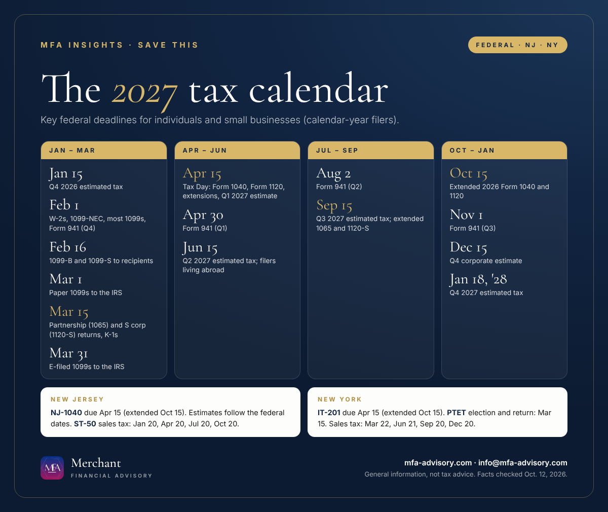

Executive summary
- Thursday, April 15, 2027 is Tax Day for 2026 individual returns (Form 1040, NJ-1040 and NY IT-201), C corporation returns and the first 2027 estimated payment.
- Feb. 1, 2027 is the W-2 and 1099-NEC deadline. March 15, 2027 is the deadline for partnership and S corporation returns.
- 2027 estimated tax due dates: April 15, June 15, Sept. 15 and Jan. 18, 2028. New Jersey and New York use the same dates.
- Extended returns are due Oct. 15, 2027. Add every date below to your calendar in one click.
Bottom line: Put the 2027 dates that apply to you on your calendar now, especially April 15 and the four estimated tax payments, so nothing sneaks up on you.
This 2027 tax calendar lists the federal, New Jersey and New York deadlines most individuals and small businesses need, from the first estimated payment in January to extended returns in October. It covers calendar-year filers. If a date falls on a weekend or legal holiday, the deadline moves to the next business day, and the dates below already reflect that.

Important tax dates and deadlines in 2027 (federal)
| Date | Tax deadline |
|---|---|
| Fri, Jan. 15, 2027 | Fourth-quarter 2026 estimated tax payment due (individuals; farmers and fishermen). |
| Mon, Feb. 1, 2027 | Give employees 2026 Forms W-2 and file W-2/W-3 with the Social Security Administration. Give recipients most 2026 Forms 1099 and file Form 1099-NEC with the IRS. File Form 941 for Q4 2026, Form 940 and Forms 943, 944 and 945 (Feb. 10 if all tax was deposited on time). |
| Tue, Feb. 16, 2027 | Give recipients Forms 1099-B (brokerage statements), 1099-S and certain 1099-MISC. If you claimed exemption from withholding in 2026, file a new Form W-4 to keep it. |
| Mon, March 1, 2027 | File paper Forms 1099 with the IRS (with Form 1096). Farmers and fishermen who didn't pay a Jan. 15 estimate file their 2026 return and pay. |
| Mon, March 15, 2027 | Partnerships file Form 1065 and S corporations file Form 1120-S, and both give owners Schedules K-1. Form 7004 extends both to Sept. 15. Last day to file Form 2553 to be taxed as an S corporation starting in 2027. |
| Wed, March 31, 2027 | Electronic filing deadline for most information returns (Forms 1097, 1098, 1099 except 1099-NEC, 3921, 3922 and W-2G). |
| Thu, April 15, 2027 | Tax Day. File 2026 Form 1040 or 1040-SR and pay (Form 4868 extends filing to Oct. 15, not payment). C corporations file Form 1120. First 2027 estimated tax payment due for individuals and corporations. Household employers file Schedule H. |
| Fri, April 30, 2027 | Form 941 for Q1 2027 (May 10 if all tax was deposited on time). |
| Tue, June 15, 2027 | Second 2027 estimated tax payment. U.S. citizens and residents living abroad file Form 1040. |
| Mon, Aug. 2, 2027 | Form 941 for Q2 2027 (Aug. 10 if all tax was deposited on time). |
| Wed, Sept. 15, 2027 | Third 2027 estimated tax payment. Extended Forms 1065 and 1120-S due, with final K-1s. |
| Fri, Oct. 15, 2027 | Extended 2026 Form 1040 and Form 1120 due. |
| Mon, Nov. 1, 2027 | Form 941 for Q3 2027 (Nov. 10 if all tax was deposited on time). |
| Wed, Dec. 15, 2027 | Fourth 2027 estimated tax payment for corporations. |
| Tue, Jan. 18, 2028 | Fourth-quarter 2027 estimated tax payment for individuals. Jan. 15 is a Saturday and Jan. 17 is Martin Luther King Jr. Day. |
Employees who receive tips report them to their employer by the 10th of the following month (moved to the next business day when the 10th falls on a weekend).
New Jersey tax deadlines 2027
| Date | New Jersey deadline |
|---|---|
| Fri, Jan. 15, 2027 | Fourth-quarter 2026 NJ-1040-ES estimated payment. |
| Wed, Jan. 20, 2027 | Quarterly sales and use tax return (ST-50) for Oct.–Dec. 2026. |
| Thu, April 15, 2027 | 2026 NJ-1040 due. To extend to Oct. 15 with Form NJ-630, at least 80% of the tax you owe must be paid by April 15. First 2027 estimated payment. |
| Tue, April 20, 2027 | ST-50 for Jan.–March 2027. |
| Tue, June 15, 2027 | Second 2027 estimated payment. |
| Tue, July 20, 2027 | ST-50 for April–June 2027. |
| Wed, Sept. 15, 2027 | Third 2027 estimated payment. |
| Fri, Oct. 15, 2027 | Extended 2026 NJ-1040 due. |
| Wed, Oct. 20, 2027 | ST-50 for July–Sept. 2027. |
| Tue, Jan. 18, 2028 | Fourth-quarter 2027 estimated payment. |
Monthly sales tax filers (more than $30,000 of tax collected last year) also pay by the 20th of each month that doesn't end a quarter.
New York tax deadlines 2027
| Date | New York deadline |
|---|---|
| Fri, Jan. 15, 2027 | Fourth-quarter 2026 estimated income tax payment (IT-2105). |
| Mon, Feb. 1, 2027 | Employers' quarterly withholding, wage reporting and unemployment insurance return (NYS-45) for Q4 2026. |
| Mon, March 15, 2027 | Pass-through entity tax (PTET): last day to opt in for 2027, 2026 annual PTET return due, and first 2027 PTET estimated payment. |
| Mon, March 22, 2027 | Quarterly sales tax return for Dec. 2026–Feb. 2027 (March 20 is a Saturday). |
| Thu, April 15, 2027 | 2026 IT-201 or IT-203 due. Form IT-370 gives an automatic six-month extension to file (not to pay). First 2027 estimated payment. |
| Fri, April 30, 2027 | NYS-45 for Q1 2027. |
| Tue, June 15, 2027 | Second 2027 estimated payment. Second PTET estimate. |
| Mon, June 21, 2027 | Quarterly sales tax return for March–May 2027 (June 20 is a Sunday). |
| Mon, Aug. 2, 2027 | NYS-45 for Q2 2027. |
| Wed, Sept. 15, 2027 | Third 2027 estimated payment. Third PTET estimate. |
| Mon, Sept. 20, 2027 | Quarterly sales tax return for June–Aug. 2027. |
| Fri, Oct. 15, 2027 | Extended 2026 IT-201 or IT-203 due. |
| Mon, Nov. 1, 2027 | NYS-45 for Q3 2027. |
| Wed, Dec. 15, 2027 | Fourth 2027 PTET estimated payment. |
| Mon, Dec. 20, 2027 | Quarterly sales tax return for Sept.–Nov. 2027. |
| Tue, Jan. 18, 2028 | Fourth-quarter 2027 estimated payment. |
Note: Business deadlines above are for calendar-year entities with a Dec. 31 year-end; fiscal-year filers have different dates. The federal dates come from the IRS's early-release draft of Publication 509 for 2027, which can change before it's final. If a disaster declaration covers your county, the IRS and the states often postpone deadlines, so check the IRS disaster relief page.
How to use this 2027 tax calendar
- Add the dates to your calendar. Use the buttons below or subscribe to the MFA key-dates calendar, which updates itself when dates change.
- Mark the ones that apply to you. An employee with no side income may only need April 15. A business owner with employees and sales tax may have a deadline almost every month.
- Pay estimates on time. Missing an estimated payment can trigger an underpayment penalty even if you pay in full by April 15.
- Get your documents by mid-February. Most W-2s and 1099s arrive by Feb. 1 and brokerage 1099-Bs by Feb. 16, so start your return after that.
Planning ahead for 2026 returns? See our year-end tax planning guide and our Form 1099 guide.
FAQs
Individual 2026 federal returns are due Thursday, April 15, 2027. New Jersey (NJ-1040) and New York (IT-201) returns are due the same day. With an extension, the filing deadline moves to Oct. 15, 2027, but any tax owed is still due April 15.
April 15, June 15 and Sept. 15, 2027, and Jan. 18, 2028 for the fourth quarter. The final 2026 payment is due Jan. 15, 2027. New Jersey and New York use the same dates.
Form 1099-NEC is due to recipients and the IRS by Feb. 1, 2027. Most other 1099s go to recipients by Feb. 1, with 1099-B and 1099-S by Feb. 16. Paper 1099s are due to the IRS March 1 and electronic ones March 31.
Monday, March 15, 2027, or Sept. 15, 2027 with a Form 7004 extension.
It moves to the next business day. That's why the fourth-quarter 2027 estimate is due Jan. 18, 2028 instead of Jan. 15.
Your W-2s and 1099s (most arrive by Feb. 1, brokerage forms by Feb. 16), last year's return, records of estimated payments, and receipts for deductions and credits. If you can't finish by April 15, file an extension and pay what you expect to owe.
Merchant Financial Advisory (MFA), an accounting, tax and business solutions provider in Princeton, New Jersey, helps individuals and small and mid-sized businesses in New Jersey, New York and nationwide stay ahead of every deadline. See our tax and bookkeeping services, or book a call below.
Save the key dates
- Fri, Jan 15, 2027Q4 2026 estimated tax due (IRS, NJ, NY) Final 2026 estimated tax payment for individuals and farmers/fishermen.
Add to calendar
- Mon, Feb 1, 2027W-2s, 1099-NEC and most 1099s due Furnish 2026 Forms W-2 and most 1099s to recipients; file W-2/W-3 and 1099-NEC with the government. Form 941 for Q4 2026 and Form 940 are also due.
Add to calendar
- Tue, Feb 16, 2027Forms 1099-B, 1099-S and certain 1099-MISC due to recipients Consolidated brokerage statements (1099-B) and real estate (1099-S) recipient copies.
Add to calendar
- Mon, Mar 1, 2027Paper 1099s due to the IRS; farmers and fishermen file 2026 returns Paper information returns with Form 1096. Electronic filers have until March 31. Farmers/fishermen who skipped the Jan. 15 estimate file and pay by this date.
Add to calendar
- Mon, Mar 15, 2027Partnership (1065) and S corporation (1120-S) returns due; NY PTET election and return Schedules K-1 due to partners/shareholders. Form 7004 extends to Sept. 15. Last day to file Form 2553 for S status starting in 2027. NY pass-through entity tax: 2027 election deadline and 2026 annual PTET return.
Add to calendar
- Wed, Mar 31, 2027Electronic 1099 filing deadline (most forms) E-file Forms 1097, 1098, 1099 (except 1099-NEC and a few others), 3921, 3922 and W-2G with the IRS.
Add to calendar
- Thu, Apr 15, 2027Tax Day: 2026 individual and C corporation returns; Q1 2027 estimates (IRS, NJ, NY) Form 1040, Form 1120, NJ-1040 and NY IT-201 due. File an extension (Form 4868, NJ-630, IT-370) by today if you need one, and pay what you owe. First 2027 estimated payment due.
Add to calendar
- Tue, Jun 15, 2027Q2 2027 estimated tax due (IRS, NJ, NY); U.S. taxpayers abroad file Second 2027 estimated payment. Americans living abroad file Form 1040 (automatic 2-month extension).
Add to calendar
- Wed, Sep 15, 2027Q3 2027 estimated tax due; extended 1065 and 1120-S returns due Third 2027 estimated payment (IRS, NJ, NY). Extended partnership and S corporation returns and final K-1s due.
Add to calendar
- Fri, Oct 15, 2027Extended 2026 individual and C corporation returns due (IRS, NJ, NY) Final deadline if you filed an extension in April.
Add to calendar
- Wed, Dec 15, 2027Q4 2027 corporate estimated tax due Fourth installment of 2027 estimated tax for C corporations. NY PTET fourth 2027 estimated payment also due.
Add to calendar
- Tue, Jan 18, 2028Q4 2027 estimated tax due (IRS, NJ, NY) Jan. 15, 2028 falls on a Saturday and Jan. 17 is Martin Luther King Jr. Day, so the deadline moves to Tuesday, Jan. 18.
Add to calendar
Subscribe to every MFA key date
"Add all these dates" downloads one file that opens in Apple Calendar, Outlook or Google Calendar (in Google, use Settings, then Import). Subscribing works with Apple, Google and Outlook and updates itself whenever we publish a new deadline.
Get key tax dates and new articles by email
Every new MFA Insights article, the IRS, New Jersey and New York deadlines that matter, and a calendar you can save. For individuals and small and mid-sized businesses.
Almost done: check your inbox and click the confirmation link to join MFA Insights. (If you don't see it in a minute, check Promotions or Spam.)
Have a question about this?
Ask us privately. Your question goes straight to our inbox, not onto the page, and we reply by email within one to three business days. Please don't include Social Security or account numbers.
Thanks, your question is in. We'll reply by email within one to three business days.
Sources
- IRS Publication 509 (2027), Tax Calendars (early release draft)
- IRS Publication 509 (2026), Tax Calendars
- NJ Division of Taxation: When to File and Pay
- NJ Division of Taxation: Estimated Payments
- NJ Division of Taxation: Filing and Remitting Sales and Use Tax
- NY Tax Department: Form IT-2105-I, Estimated Income Tax
- NY Tax Department: Form IT-370-I, Extension of Time to File
- NY Tax Department: Pass-through entity tax (PTET)
- NY Tax Department: Filing requirements for sales and use tax returns
- NY Tax Department: 2026 tax filing dates (weekend and holiday rule)
Facts checked against the sources above as of October 12, 2026. This article is general information, not tax, legal, or financial advice, and reading it does not create a client relationship. Tax rules change and every situation is different; confirm the details for your situation with a qualified professional before acting.